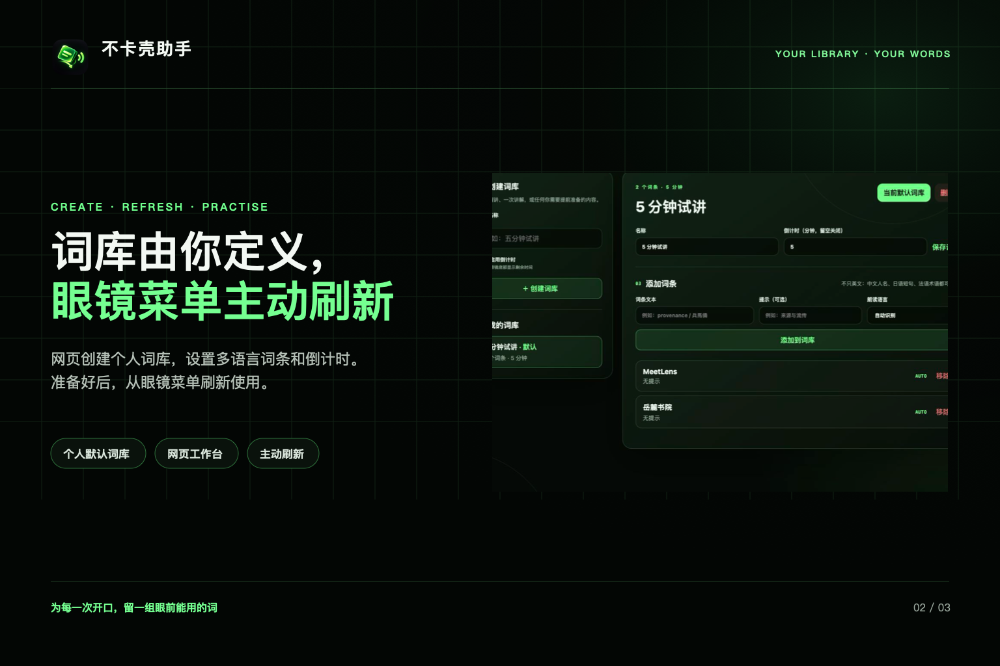
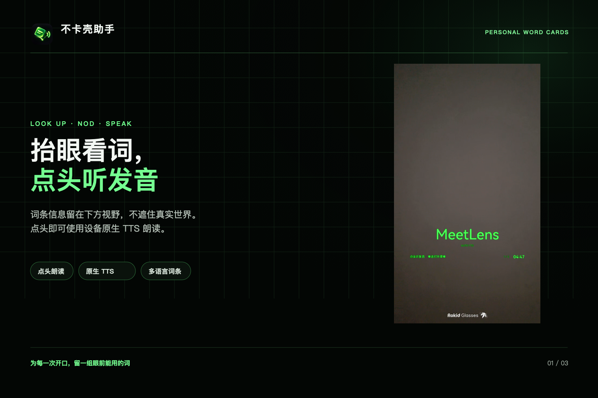
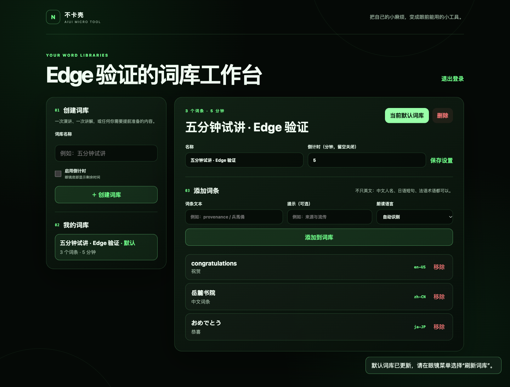

《征文计划》不卡壳（NodCue）：用 AIUI 把“读给我听”变成一个点头动作
准备演讲、介绍一个产品，或者讲解一件展品时，有一种很具体的尴尬：内容已经准备好了，偏偏遇到一个拿不准读音的词。
英文术语、产品名、陌生的中文地名，都可能让人停一下。
查手机当然可以，问语音助手也可以。但在正在讲话的场景里，我希望这个过程再短一点：词已经准备好，抬眼能看到；需要听的时候，点一下头。
于是，我用 AIUI 做了一个运行在 Rokid Glasses 上的小工具，叫“不卡壳”。网页端准备个人词库，眼镜端显示当前词条，点头调用设备的语音合成朗读，还可以切词和看演讲倒计时。
功能很小，但把它放到眼镜上之后，需要重新考虑的事情比我原先想象的多：怎么打开、什么时候发声、菜单何时出现，以及界面到底该占多少视野。
一、连名字，都得放进真实的交互里试
这个项目之前叫“别卡壳”。名字表达的是我希望解决的问题，但在 AI 助手里用语音打开应用时，它容易被误解，结果应用没有被唤起。
后来，我把名字改成了“不卡壳”。
这件小事让我意识到，眼镜应用的交互从唤起之前就开始了。名字除了好记，还得放进一句话里念出来，看看助手会怎样理解。应用内部的按钮做得再清楚，如果第一步都没进来，后面的设计就用不上。
改名也只是这次迭代的一个处理办法，是否能稳定唤起，仍要结合商店配置和实际设备继续验证。
进入应用之后，我希望操作尽量明确：当前显示哪个词，点头就读哪个词。用户不需要为了这一个动作，再组织一遍完整的语音指令。
二、把准备留在网页，把使用留在眼镜
在眼镜上逐字输入词库并不合适。因此，我把这个工具分成了两个部分。
网页端负责准备：创建词库、输入词条、填写可选提示、选择语言，以及设置可选的倒计时。眼镜端负责使用：看当前词、听发音、切换词条，以及在需要时刷新内容。
完整流程是这样的：
- 在眼镜中打开“不卡壳”，单击镜腿打开菜单，选择“网页登录”。
- 眼镜显示一个四位配对码，用户在网页输入它，进入对应的词库工作台。
- 创建词库，加入词条，把一个非空词库设为默认。
- 回到眼镜菜单，选择“刷新词库”。
- 看到当前词条后，点头听发音，用镜腿滑动切换上一词或下一词。
配对码有效期为 30 秒，只能使用一次。眼镜会提示网页登录结果，网页里的内容变化则由用户从菜单主动刷新。
我保留这个主动确认，是因为使用场景可能是一场已经开始的讲话。电脑上刚编辑好的内容，不适合在演讲者毫无准备的时候突然替换眼前的词条。
词库也不限于英文，可以录入中文、日文等不同语言的文本。具体能用哪些音色、发音是否自然，取决于设备提供的 TTS 能力，需要逐项试听。

三、让当前状态决定界面和操作
这次征文的主题是“意图驱动的智能界面”。在这个项目里，我选择从一个范围很小、含义明确的动作开始：看着当前词条点头，表示“把这个读给我听”。
当前版本没有接入大模型做自由对话或语义推理。它通过已经选定的词条、页面状态和设备输入来完成动作，重点是把这条使用路径做清楚。
例如，同一次镜腿滑动，在不同状态下有不同的用途：
- 菜单关闭时，用来切词。
- 菜单打开时，用来移动菜单焦点。
- 词库还没准备好时，页面先说明当前的问题和下一步。
点头也有边界：只有词条就绪、菜单关闭时，才进入朗读判断。正在朗读或处于冷却时间内的重复动作会被忽略，避免一次点头响两遍。
左右摇头则都表示“下一个词”，目前没有把左摇和右摇分别映射成上一词、下一词。要准确地向前或向后查找，使用镜腿滑动更合适。
反馈也随状态改变。连接时告诉用户正在同步；配对时显示数字和剩余时间；朗读时提示“正在朗读，跟我读”；刷新失败时保留原来的内容，并显示重试提示。有可用的当前账号缓存时，网络失败还能回退到已有词库。
这些反馈让用户知道，刚才的动作有没有被接住，接下来还能做什么。
四、眼镜里的界面，需要给现实留位置
我后来把阅读界面改成了下方视野 HUD：上方尽量留白，词条放在下方，序号与可选倒计时收进底栏。菜单需要时才在右下方展开。
因为使用者此时很可能正在看观众、展品或者讲稿，眼镜里的内容应该帮助他继续眼前的事。
当前词条是视觉重点。倒计时只是一个辅助信息，归零后依然可以继续听发音。菜单里集中放“朗读词汇、下个词汇、刷新词库、网页登录、退出”，用户单击镜腿打开，再通过滑动选择、单击确认。
这个过程也让我改变了对“界面完成度”的判断。眼镜界面留白很多，并不代表没做完；那些没有覆盖内容的位置，本身就是使用体验的一部分。


五、AIUI 里，几个关键部分怎样接起来
项目的眼镜运行时代码集中在 src/，其中 app.json 声明页面入口，src/AGENTS.md 描述应用身份与权限，pages/index/index.ink 承载页面、状态和事件。后端与网页放在 server/，不打进眼镜的 AIX 包。
眼镜页面的核心关系可以概括成：
设备输入 → 根据页面状态判断动作 → 更新当前词条或调用 TTS → 更新提示。
头部动作优先接收页面级 onHeadGesture 回调。同时，考虑到目标宿主的兼容情况，项目还保留了 30Hz Gyroscope 检测：比较一段俯仰和偏航数据的变化，识别点头或摇头。两条来源最终进入同一处动作分发，并通过朗读状态和冷却时间限制重复触发。
TTS 也做了兼容处理。宿主提供 Web Speech 时，按词条配置设置语言和语速；没有该接口时，回退到 wx.speech.playTTS。后者当前只传入文本，因此不能把 Web Speech 的语速设置理解为所有设备上的一致表现。
网页和眼镜通过 Node.js 后端连接，数据存储使用 PostgreSQL。服务端处理词库、一次性配对和浏览器会话，眼镜端获取当前用户的默认词库，并缓存可用内容。
产品版本主要使用音频和网络能力，没有接入摄像头来识别眼前的陌生词。这样可以先把“事前准备好、当场快速听”的路径跑通。
六、几个只有上了真机才变清楚的问题
第一个问题是页面元素重叠。
有些隐藏和显示的写法，在预览里看起来正常，真机却可能把不同状态的元素叠在一起。最后，我让阅读态和非阅读态分别使用显式、互斥的 ink:if 条件控制渲染，减少依赖样式隐藏或分支邻接关系。
第二个问题是镜腿滑一次，词条却跳了两次。
在目标设备上，一次滑动会先出现水平中间码，再出现最终的上下方向键。如果把这些都当成独立导航动作，就会重复切词。当前实现只消费最终的 ArrowUp / ArrowDown；同时忽略 GlobalHook 和缺少明确按键码的模糊事件，避免它们提前打开或执行菜单。
第三个问题是能力存在，不代表不同宿主会以相同方式提供它。
点头事件和 TTS 都做了兼容路径。页面退出时，还需要停止传感器并清理计时器。这些收尾工作没有新的界面，却直接影响下一次打开时的行为。
验证时，我把纯逻辑、接口和设备行为分开看：可以自动检查的部分交给测试；手势是否自然、发音是否可用、信息是否挡视线，则回到眼镜上确认。
2026 年 10 月 22 日检查代码时，主项目 61 项自动化测试全部通过，独立的离线演讲演示另有 7 项测试通过。它们覆盖词条导航、手势判断、菜单、配对与词库接口、持久化、页面和打包约定等内容，但不能代替真机上的实际体验。
迁移后，我又在 Microsoft Edge 155.0.4283.62 中实际操作了一遍网页。后端连接真实的本地 PostgreSQL，眼镜配置和服务端环境使用新生成的同一组客户端 key。
这次没有给浏览器直接塞登录状态，而是先用临时测试账号通过设备接口生成配对码，再在网页输入四位数字完成登录。随后创建五分钟试讲词库，分别添加英文、中文、日文词条，设为默认，再用项目原有的眼镜客户端模块读取默认词库，核对内容和倒计时。
接着，我把倒计时改成十分钟，移除一个词条，再通过“其他语言”添加德语词条。刷新页面后，登录会话、默认词库和已保存的设置都恢复正常。空词库设为默认会收到错误提示，已使用的配对码也无法重复登录。最后，删除测试词库并退出登录，清理临时账号。
整个 Edge 流程通过了 13 项检查，未出现未捕获的页面 JavaScript 异常或 HTTP 5xx 响应。浏览器实际保存的会话 Cookie 带有 HttpOnly 标记；这里使用本地 HTTP，和生产 HTTPS 环境的 Secure Cookie 配置要区分。

此外，本地服务接口还完成了 8 项联调检查，包括新 key 可用、旧 key 被拒绝，以及重启后 PostgreSQL 数据与浏览器会话仍然保留。这轮验证覆盖的是网页和本地后端，没有重新连接眼镜；头部手势、发音和 HUD 的展示继续使用此前已经保存的实机图片与录屏。
文中的前三张图沿用项目已有的上架展示素材，第四张图来自本次 Edge 验证。文末的 AR 实机录屏直接复用原项目 28 秒剪辑，不重新生成或模拟设备画面。
七、做完这个小工具，我更在意什么
“不卡壳”从一个很具体的小麻烦出发：需要发音帮助时，能不能少停顿一下。
做的过程中，我逐渐发现，最值得琢磨的常常是一些很小的决定：名字能不能被正确理解，点头后是否只响一次，网页修改何时出现在眼镜里，菜单是否抢走了切词动作，以及词条该放在视野的什么位置。
这些决定连在一起，才构成一个能用的小工具。
目前它适合提前准备好的词条。接下来，我想继续验证不同设备和语言下的发音体验，以及连续演讲时头部动作的误触情况。
项目现已以 NodCue 的名字公开，中文继续叫“不卡壳”。Nod 是点头，Cue 是提示，我觉得它正好概括了这个工具的用途。
公开源码：https://github.com/sengmitnick/nodcue
这次开源迁移另建了干净的 Git 仓库，旧私有仓库保留完整历史。真实配置和 AIX 构建包不进入新仓库；眼镜端、后端与离线演示的业务逻辑沿用原实现。
需要自行部署时，从 config/nod-service-config.example.js 复制生成被 Git 忽略的 src/lib/nod-service-config.js，把其中的 clientKey 与服务端 NOD_CLIENT_KEY 设成同一个值，再打包。数据库连接和独立的会话签名密钥只留在服务端。首次启动、服务器配置和真机打包步骤都写在 README 里。
这样，其他开发者可以先把这个很小的使用流程跑通，再围绕自己的场景继续设计。
对我来说，AIUI 的一个吸引力在于：可以从自己每天碰到的一个小麻烦开始，把它变成戴在眼前、用一个动作就能调用的工具。
如果让你给自己的眼镜加一个这样的小工具，你最想省掉哪个步骤？
相关材料
- 活动原文：https://forum.rokid.com/post/detail/3754
- AIUI 官方项目：https://github.com/yodaos-project/AIUI
- AIUI 官方文档：https://js.rokid.com/AIUI
- NodCue 公开源码：https://github.com/sengmitnick/nodcue
- 演示材料：文中三张原项目展示图、本次 Edge 网页截图，以及下方 28 秒 AR 实机录屏。